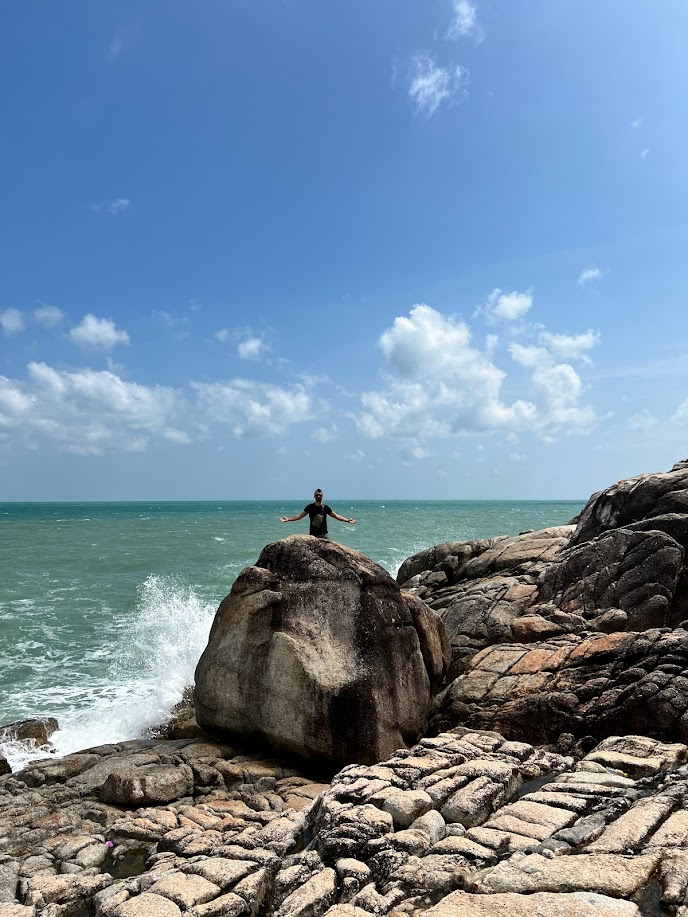

I live in Florida with my way-out-of-my-league wife and two children who's only deterrent to establishing a Lord-of-the-Flys-esque society is the lack of snacks as a result. I have two dogs and we're recently down to one fish. I've lived in Florida my whole life, but moved from Tampa to the Jacksonville area as a child, where I met my wife in High School.
My hobbies are pretty standard for a self-taught developer, especially a game developer. I like to play video games, and I like to develop. Even more than that, though, I like spending time and traveling with my family. We took a trip to my wife's homeland of Thailand late 2023 and it was magical.
Professionally, I started out in the Mortgage Servicing industry, hated it, moved into Real Estate, hated it, and then finally was able to land a job in IT at Black Knight as an Asset Analyst. While at BK, I started discovering my love of programming and development, and learned and practiced in my own time. With the skills I developed, I was able to get a contract job for a company that makes VR games for physical rehab purposes. Using the Unity game engine, I develop virtual reality games that are used to help patients who are suffering from neurodegenerative injuries or illnesses recover quicker and enjoy rehab more. I'm very proud of this job. From BK, I shifted over to a Systems Admin role at a small company called Volly, where I handle almost every facet of IT operations. I recently received a promotion to an Associate Software Engineer position here, and I'm very eager to get started.
Here's a random shot of me in Koh Samui, Thailand
